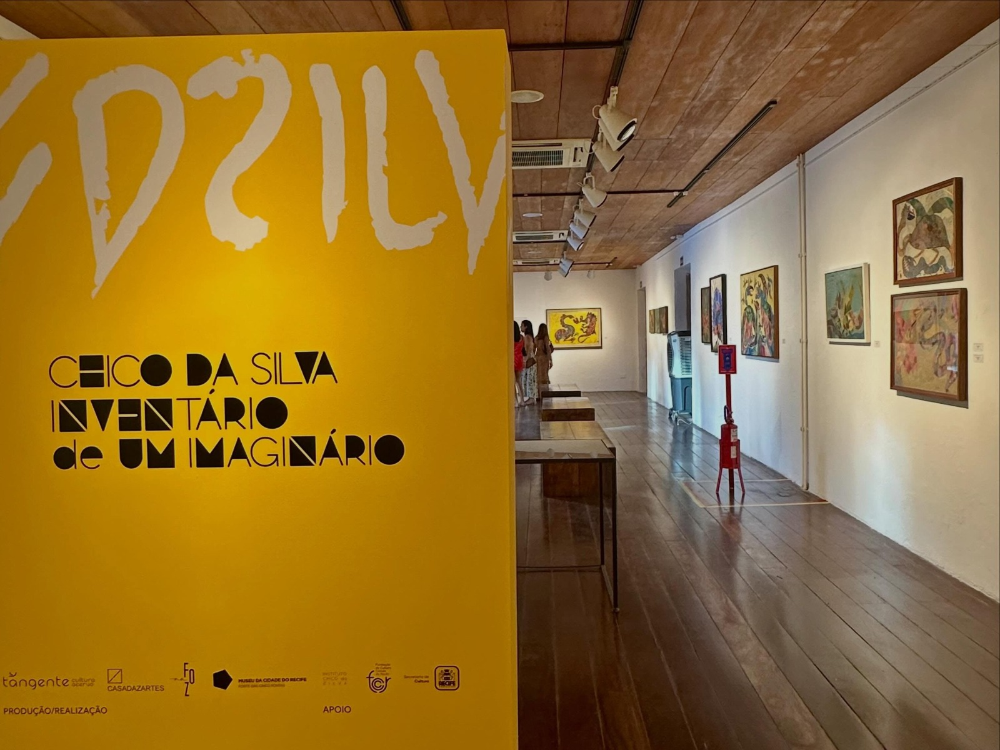
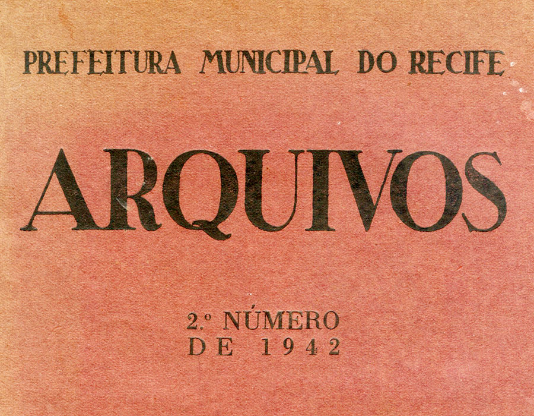
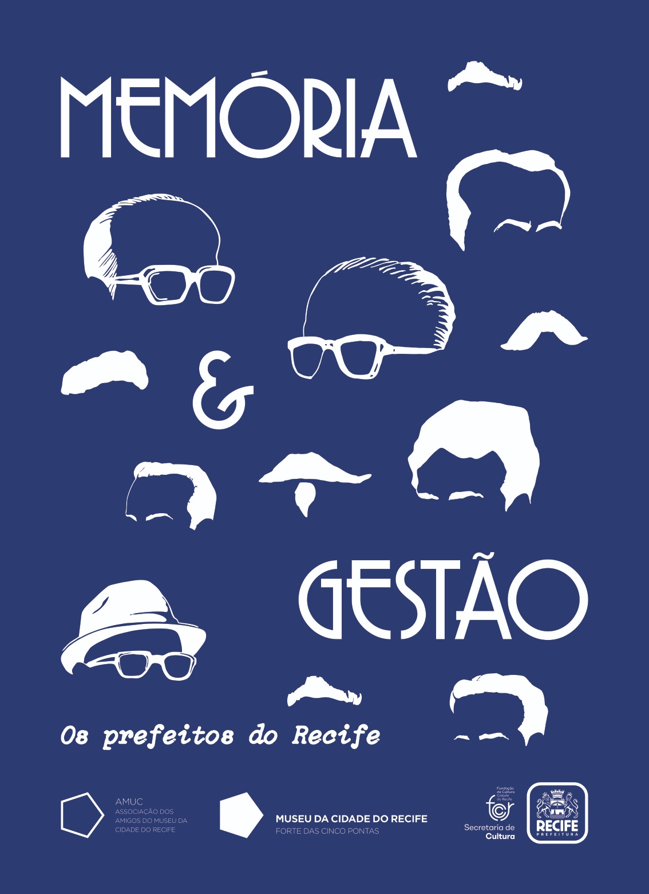
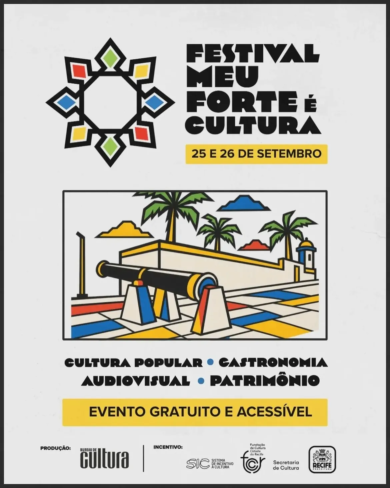
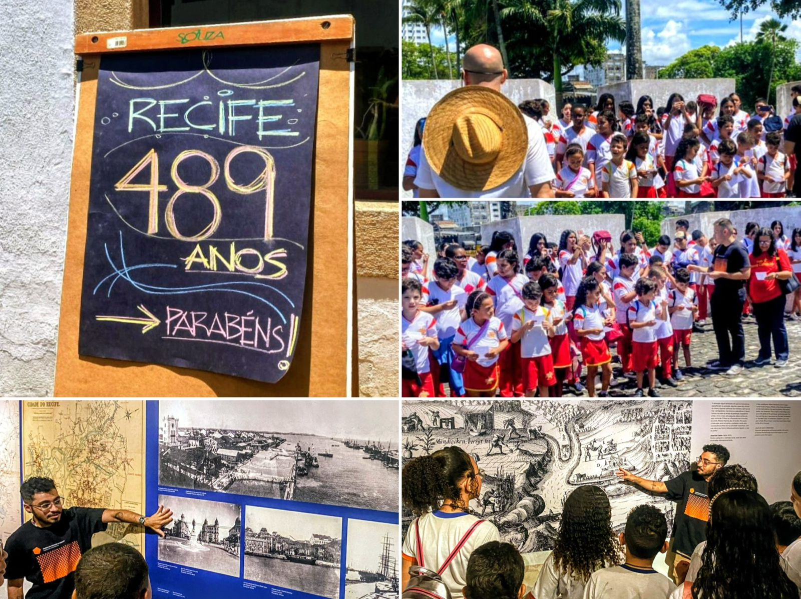
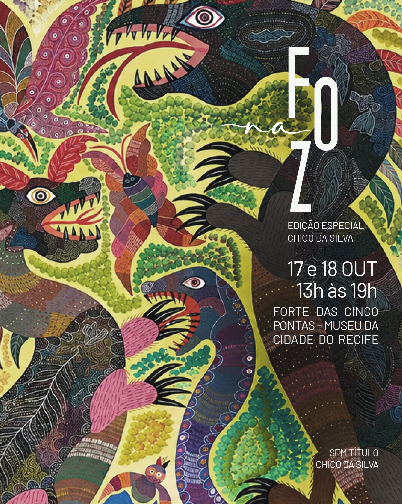
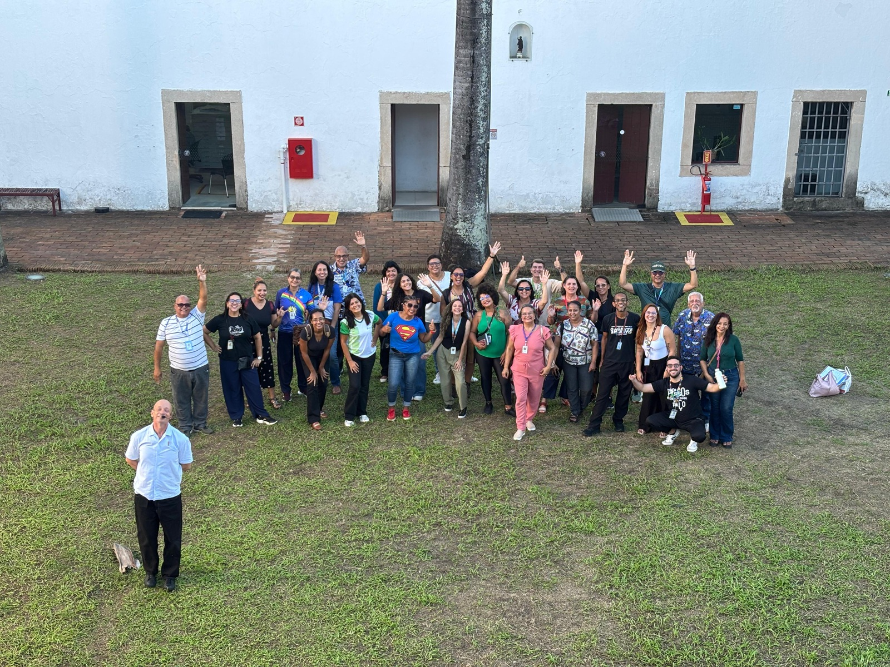
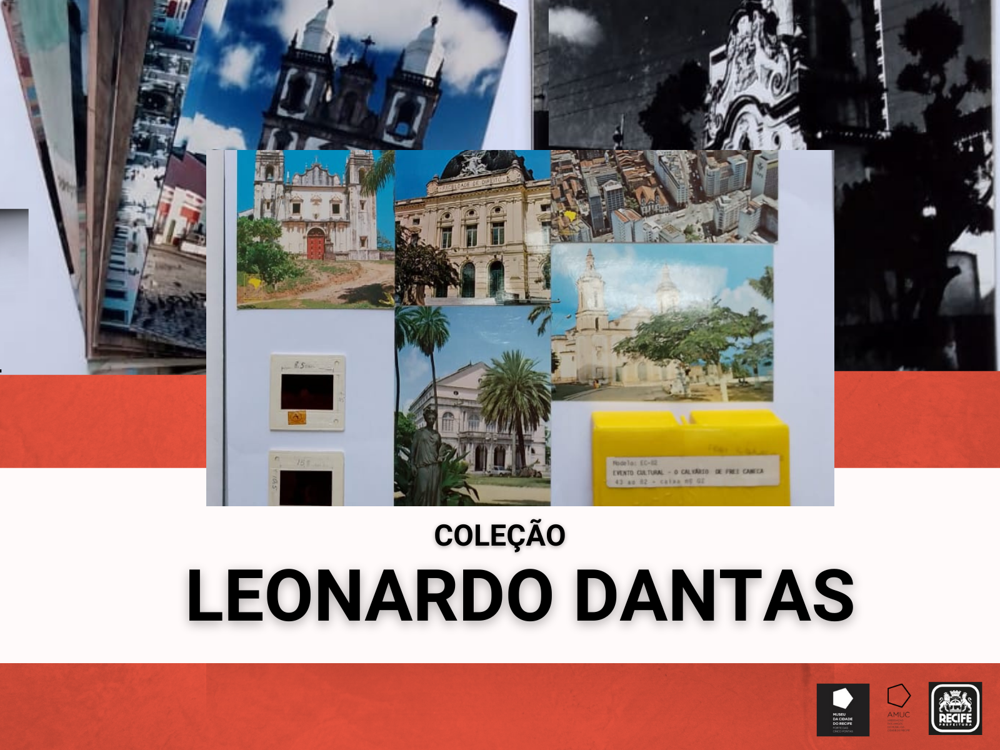

Exposição
Chico da Silva
Últimos dias para ver a mostra no Museu da Cidade do Recife.
Forte das Cinco Pontas · Recife
Um museu dentro de uma fortaleza erguida pelos holandeses em 1630, com 250 mil imagens que contam a vida urbana, cultural e social da cidade.
O Museu
O forte nasceu pentagonal, com cinco pontas, em 1630; reconstruído em pedra e cal pelos portugueses, ganhou quatro baluartes. Instalado ali em 1982, o Museu da Cidade do Recife guarda cartografia, fotografia, arqueologia e objetos que revelam como a cidade cresceu, entre rios, pontes e revoluções.

Planta interativa
Uma maquete esquemática da fortaleza: planta quadrada com quatro baluartes, fosso, portão e pátio interno. Clique nos pontos numerados e salte para a visita 360° daquela área.
Modelo esquemático, não é um levantamento arquitetônico. Dá para refinar com a planta oficial do museu.
Em cartaz e em destaque

Últimos dias para ver a mostra no Museu da Cidade do Recife.

Uma nova mostra sobre a trajetória administrativa da capital.

Dois dias de programação gratuita ocupando o Forte das Cinco Pontas.

Celebração especial do aniversário da cidade no museu.

Edição especial dedicada a Chico da Silva.

Formação sobre a cidade como espaço de cultura e memória.
Visita virtual
Caminhe pelo forte: segure o botão Andar (ou a tecla W), volte com S, arraste para olhar ao redor e use o minimapa para pular de lugar.
Por enquanto é uma simulação dentro da maquete 3D. Com o vídeo real (360° equirretangular, gravado caminhando pelo percurso) em video/tour360.mp4, o mesmo controle passa a andar o vídeo. Para vídeo local é preciso abrir o site por um servidor (por exemplo python -m http.server).

Acervo
Consulte a Coleção Leonardo Dantas, os livros de tombo fotográficos e o catálogo do acervo cartográfico, disponível para download gratuito.
Visite
Praça das Cinco Pontas, s/n · São José · Recife-PE · CEP 50020-500
Confirme horários no site oficial antes da visita.